Musik auf jedem Handy, in fünf Minuten.
Ganz ohne Vorkenntnisse. Geh die Schritte einfach der Reihe nach durch; zu jedem siehst du, wie dein Bildschirm aussieht. In der App führt dich die Karte Erste Schritte durch dieselben Schritte und hakt sie von selbst ab.
Was du brauchst
- Zwei oder mehr iPhones oder iPads mit iOS 17 oder neuer, nah beieinander.
- Dasselbe WLAN auf allen Geräten. Kein WLAN? Schalte auf einem Handy den persönlichen Hotspot ein und verbinde die anderen damit.
- Musikdateien (MP3, M4A, WAV …) auf mindestens einem Gerät, in der Dateien-App – oder gekaufte bzw. synchronisierte Songs in der Musik-App.
- Mehr nicht. Kein Konto, keine Anmeldung, kein Lautsprecher.
-
1
Tutti öffnen
Installiere Tutti auf jedem Gerät und öffne es auf dem ersten.
- Tippe auf Weiter.
- Dein iPhone fragt, ob Tutti Geräte im lokalen Netzwerk finden darf: Tippe auf Erlauben. Sonst finden sich die Handys nicht.
Aus Versehen „Nicht erlauben“ getippt? Öffne die Einstellungen-App › Datenschutz & Sicherheit › Lokales Netzwerk und schalte Tutti ein.
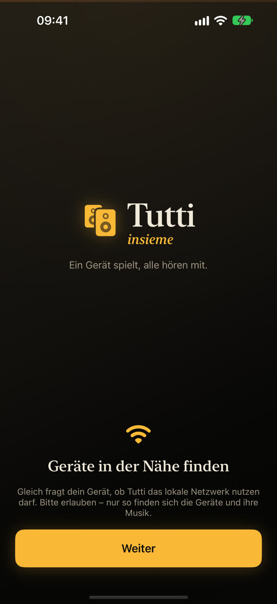
Der erste Bildschirm 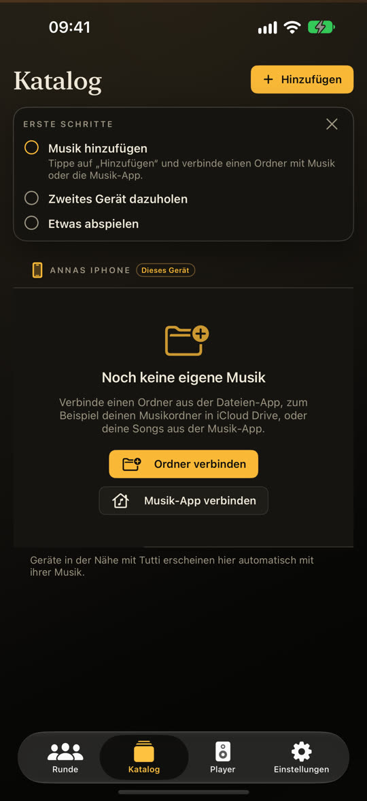
Die Karte „Erste Schritte“ -
2
Ein zweites Gerät dazuholen
Öffne Tutti auch auf dem zweiten iPhone oder iPad und tippe dort ebenfalls auf Weiter und Erlauben.
- Fertig: Es kommt von selbst in deine Runde. Das erste Handy begrüßt es mit „Salute!“.
- Tippe unten auf Runde: Unter Gerade online siehst du alle Geräte, die dabei sind.
Eine Runde ist einfach eure Gruppe. Sind mehrere Gruppen am selben Ort, fragt Tutti einmal „Zu welcher Runde gehörst du?“ – tippe auf deine.
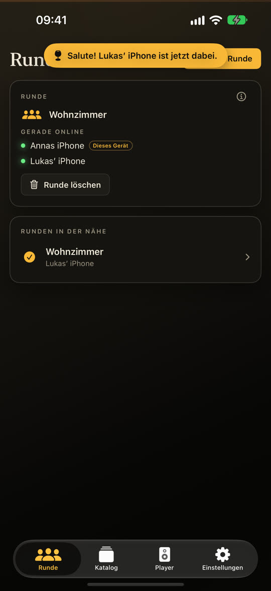
„Salute!“ und Runde › Gerade online -
3
Deine Musik hinzufügen
Öffne auf dem Handy, auf dem die Musik ist, den Katalog.
- Tippe auf Hinzufügen und dann auf Ordner verbinden.
- Such den Ordner mit deinen Songs (zum Beispiel unter Auf meinem iPhone oder iCloud Drive), tippe ihn an und dann auf Öffnen.
- Der Katalog zeigt jetzt deine Songs, sortiert nach Ordnern, Alben, Interpreten und Playlists.
Songs aus der Musik-App? Tippe stattdessen auf Hinzufügen › Musik-App verbinden. Gekaufte und synchronisierte Songs gehen; Songs aus einem Apple-Music-Abo sind kopiergeschützt und bleiben ausgegraut.
Noch keine Musik auf dem Handy? Leg am Mac oder PC einen Ordner mit Songs in iCloud Drive – dann erscheint er in der Dateien-App.
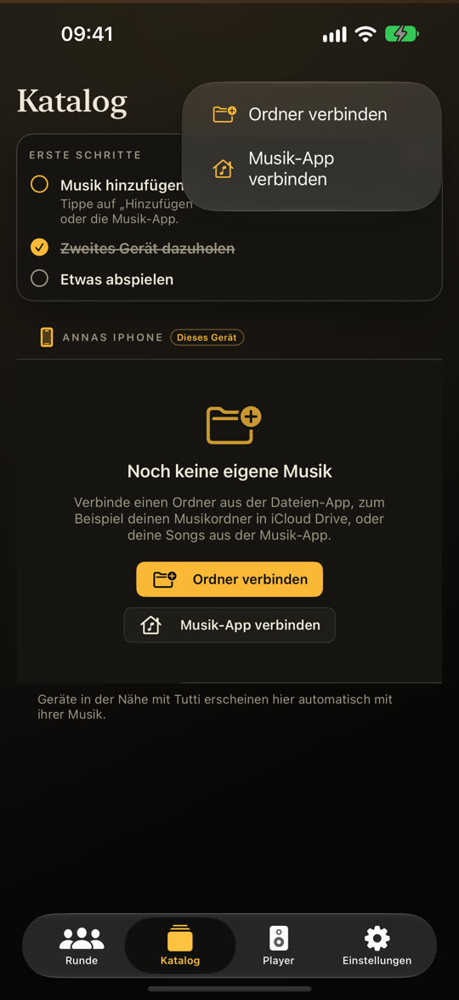
Hinzufügen › Ordner verbinden 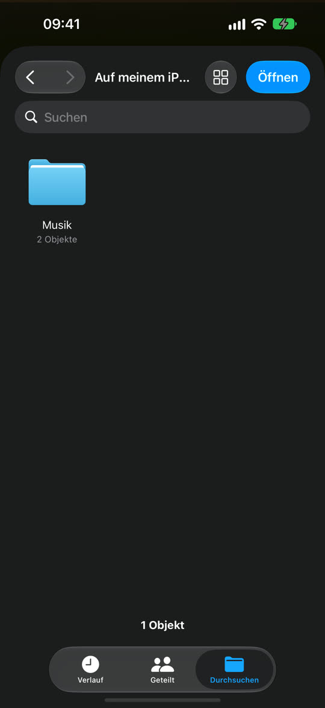
Den Ordner wählen 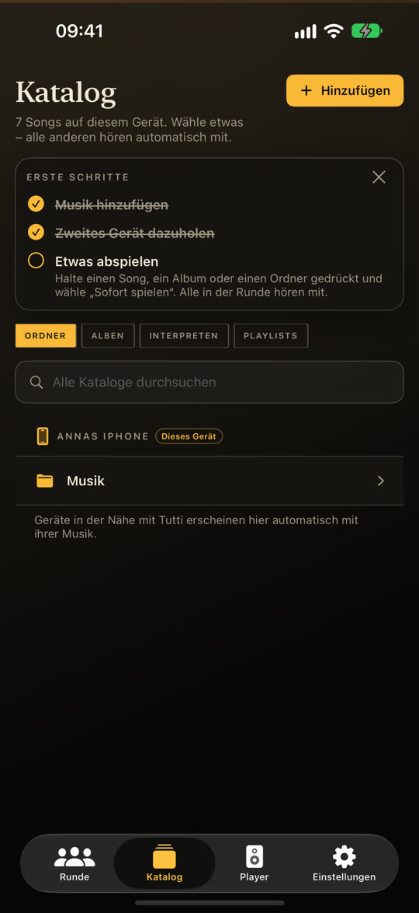
Deine Songs sind da -
4
Einen Song abspielen
- Öffne ein Album (oder einen Ordner) und halte einen Song gedrückt, bis ein Menü erscheint.
- Tippe auf Sofort spielen.
- Tippe unten auf Player: Der Song läuft, und du siehst, wer mithört.
Warum gedrückt halten statt tippen? Damit nichts aus Versehen losgeht – Musik für den ganzen Raum ist nur ein Menü entfernt. Hältst du ein Album oder einen Ordner gedrückt, spielt alles darin.
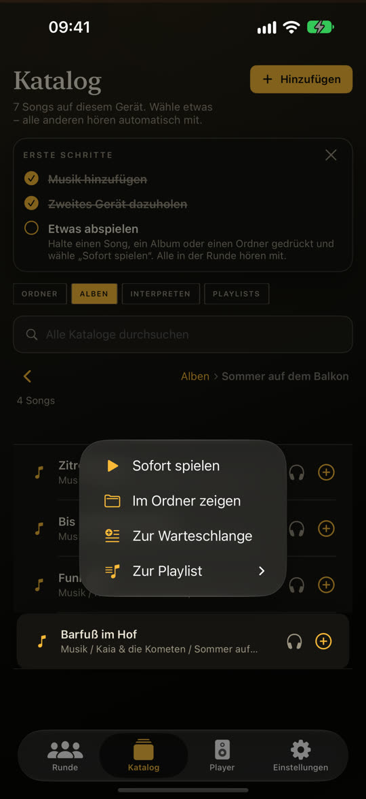
Gedrückt halten › Sofort spielen 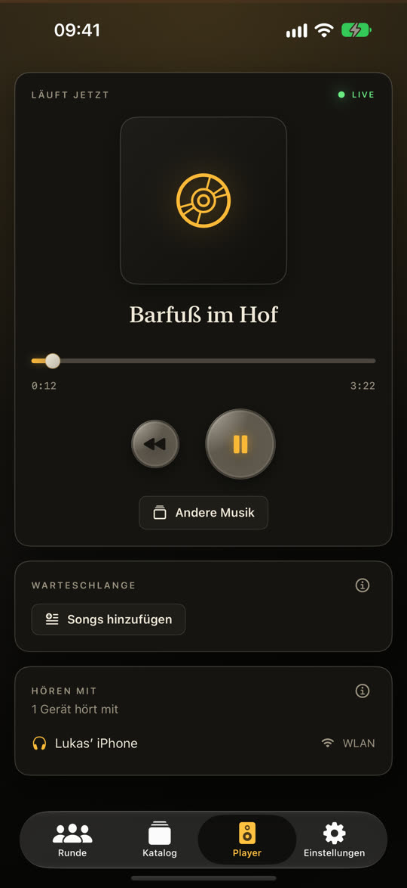
Der Player -
5
Alle hören mit – und machen mit
Schau aufs zweite Handy: Es spielt denselben Song im selben Moment. Dort musst du nichts tun.
- Jedes Handy kann pausieren, weiterspringen und Songs aussuchen – nicht nur das, das spielt.
- Im Katalog sieht das zweite Handy auch die Musik des ersten. Tippe neben einem Song auf +, um ihn in die Warteschlange zu legen.
- Scrolle im Player nach unten, um zu sehen, was als Nächstes kommt.
Ein Handy klingt etwas zu früh oder zu spät? Öffne auf diesem Handy Einstellungen › Ton zu früh / zu spät und verschiebe den Regler nach Gehör.
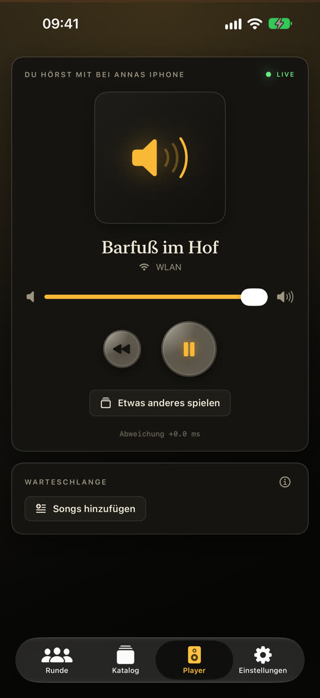
Das zweite Handy spielt mit 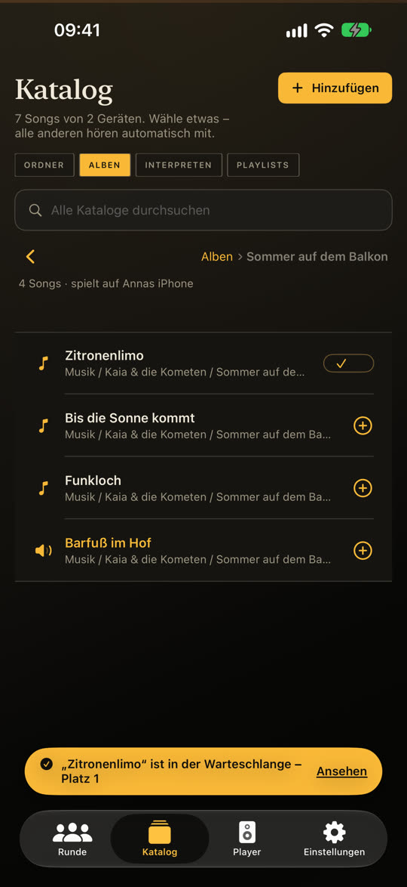
+ legt einen Song in die Warteschlange 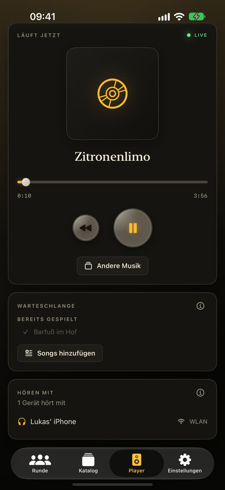
Die gemeinsame Warteschlange -
6
Optional: eine private Runde
Im Café, im Hotel oder auf einer großen Party könnten Fremde in der Nähe in eure Runde kommen. In eine private Runde kommt nur, wer ihren Code kennt.
- Tippe auf Runde › Neue Runde, schalte Privat, nur mit Code ein und tippe auf Runde starten.
- Tutti zeigt einen Code und einen QR-Code. Zeig ihn deinen Freunden.
- Sie tippen unter Runden in der Nähe auf deine Runde und geben den Code ein – oder scannen den QR-Code mit der Kamera-App.
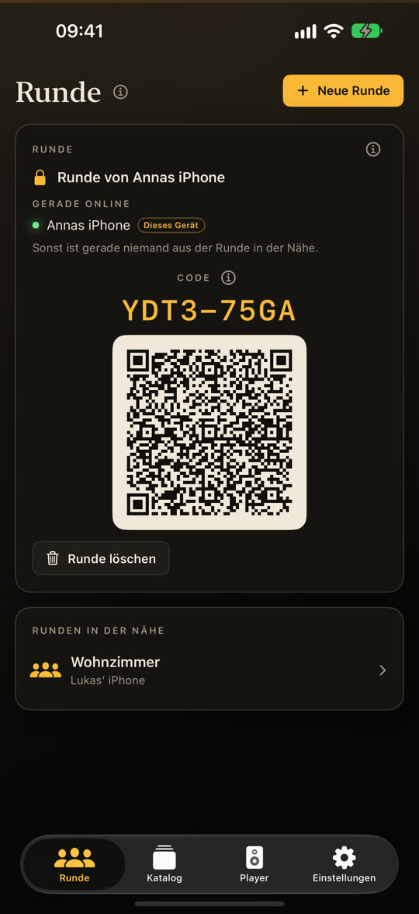
Der Code der Runde 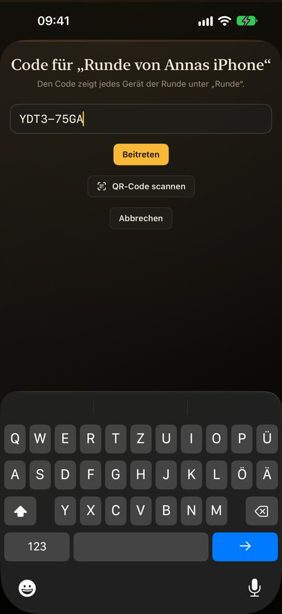
Mit dem Code beitreten -
7
Mehr als drei Geräte
Bis zu drei Geräte hören kostenlos zusammen, das spielende mitgezählt. Für eine größere Gruppe kauft eine Person einmal Tutti Insieme Pro: Einstellungen › Tutti Insieme Pro. Dann ist die ganze Runde frei – für alle darin.
Mithören ist immer kostenlos. Ist die Runde voll, zeigt das neue Handy „Die Runde ist voll“ mit einer Taste, um Pro freizuschalten.
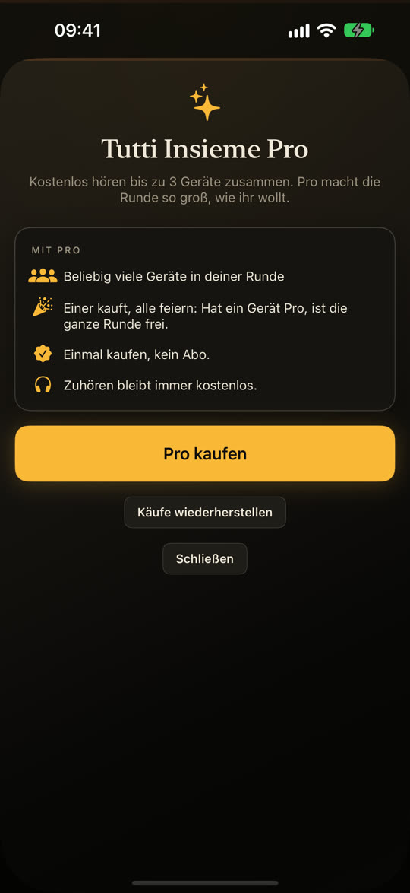
Tutti Insieme Pro
Etwas klappt nicht?
- Die Handys finden sich nicht: Sind sie im selben WLAN, und hast du beim lokalen Netzwerk auf Erlauben getippt? Gast- und Hotel-WLANs halten Geräte oft voneinander fern – ein persönlicher Hotspot klappt immer.
- Ein Song ist ausgegraut: Er stammt aus einem Streaming-Abo und ist kopiergeschützt. Nimm Dateien, die dir gehören – oder schließ das Gerät, das ihn spielt, per Kabel an und nutze Player › Live-Eingang.
- Mehr Antworten auf der Support-Seite.
Die Screenshots stammen aus dem iOS-Simulator mit erfundener Demo-Musik; auf deinem Handy stehen dort die Namen deiner Geräte und Songs.